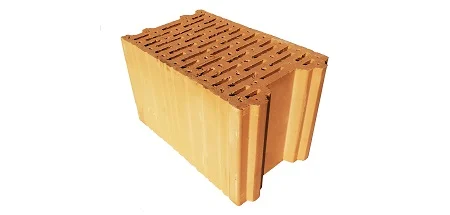
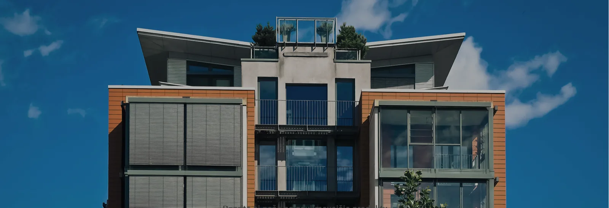
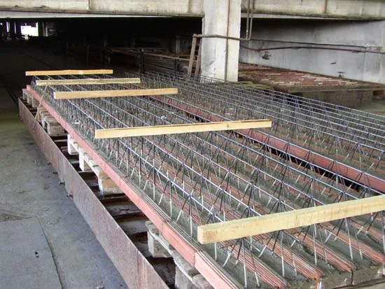

Tehly TermoBRIK
Výrobky pre obvodové murivo, nosné steny, priečky aj akustické konštrukcie.
Prejsť na murivoKatalóg výrobkov TermoBRIK je dostupný na stiahnutie. Stiahnuť katalóg (PDF)
Keramický systém TermoBRIK
Pezinské tehelne vyrábajú murovacie materiály, keramické nosníky, stropné vložky a preklady. Pomôžeme vám vybrať riešenie aj orientačne vypočítať spotrebu materiálu.

Ilustračná fotografia použitá na pôvodnom webe spoločnosti.
Rýchly začiatok
Začnite podľa časti stavby. K presnému výrobku sa dostanete bez prechádzania desiatok technických názvov.
TermoBRIK, SUPRA, brúsené aj nebrúsené vyhotovenia.
02 / PRIEČKYRiešenia pre deliace konštrukcie a akustické murivo.
03 / STROPNosníky s priestorovou výstužou a keramické stropné vložky.
04 / OTVORYKeramické preklady KP 23,8 a KP 12.
Portfólio

Výrobky pre obvodové murivo, nosné steny, priečky aj akustické konštrukcie.
Prejsť na murivo
Keramické nosníky s priestorovou výstužou a stropné vložky TermoBRIK.
Prejsť na stropný systém
Nosné preklady KP 23,8 a nenosné preklady KP 12 pre otvory v murive.
Prejsť na prekladySlužba bez poplatku
Výpočet spotreby materiálu podľa projektovej dokumentácie poskytuje spoločnosť zdarma. Výstup zahŕňa materiál TermoBRIK pre hrubú stavbu; stropný systém sa rieši podľa dodaného kladačského plánu.

Spoločnosť
Pezinská tehelňa patrí podľa histórie zverejnenej spoločnosťou medzi najstaršie tehliarske podniky na Slovensku. Dnes sortiment vzniká v troch výrobných strediskách.
Galéria
Snímky pochádzajú priamo z webu Pezinských tehelní; projektové názvy ani parametre pôvodný web neuvádza.


Časté otázky
Ďalší krok
Napíšte, čo staviate a kde. Dopyt nasmerujeme na vhodný kontakt.